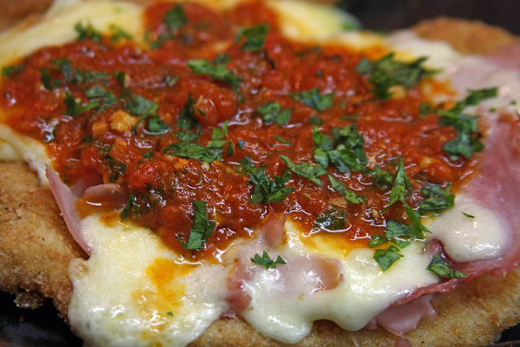

Por estas latitudes solemos llamar "Milanesa" y más cariñosamente "Milanga" a un fino filete de carne de ternera vacuna, que se reboza con huevo y pan rallado, para luego freírse u hornearse. También puede ser de pescado o pollo, en este último caso también denominado "Suprema" si está hecha con la pechuga del ave. Su origen es algo incierto, pero parece provenir de Italia, más precisamente de la Lombardía y ser una derivación de la Cotoletta alla Milanese, que tiene la misma técnica de rebozado, aunque en su caso suele estar hecha con una chuleta de cerdo, bastante más gruesa y con hueso. ¿Pero qué hay de la Milanesa a la Napolitana? Su nombre suena bastante extraño, porque hermana a dos ciudades italianas normalmente enemistadas entre sí: la pujante y rica ciudad norteña de Milano con la sureña, humilde y desorganizada Nápoli. Entonces, ¿en qué quedamos? Estaremos hablando de un plato milanés, de uno napolitano, o de una extraña y circunstancial alianza gastronómica entre ambos rivales? ¡Nada de eso! La "Milanesa a la Napolitana" es un invento bien argentino, creado en la década del 50 en un restaurante llamado "El Nápoli" ubicado en la ciudad de Buenos Aires frente al mítico estadio del Luna Park, allí donde el recordado púgil Carlos Monzón y otros grandes boxeadores argentinos consiguieron sus más brillantes hazañas deportivas. Resulta que había un cliente que llegaba todos los días con puntualidad inglesa, pasada la media noche y siempre ordenaba una milanesa. El mozo que lo atendía, con solo verlo llegar, siempre adelantaba su pedido a la cocina. Todas las noches se repetía el mismo ritual, hasta que un día el cliente llegó más tarde de lo acostumbrado. Un asistente bastante torpe tomó el lugar del cocinero que ya había cumplido su turno, con tan mala suerte que pasó el punto de fritura de la única milanesa que quedaba en el restaurante. Asustado, consultó a Jorge La Grotta, el dueño del lugar, para ver como podía solucionar el problema. El le contestó “No te preocupes, lo vamos a arreglar. Tapá la milanesa con jamón, queso, salsa de tomate y luego la gratinás.” Mientras el asistente se puso a disfrazar la milanesa en la cocina, el dueño del salón, se acercó al cliente y le propuso a probar algo nuevo y especial. Minutos más tarde el mozo llegó a la mesa con la humeante fuente, provocando el placer inmediato al sorprendido comensal. Así, mientras veía devorar su más reciente creación, don Nápoli tomo el menú original, se sentó en una de las mesas que se encontraban libres y agregó al final de la lista, de su propio puño y letra, el nombre de su flamante invento: "Milanesa a la Nápoli". Con el tiempo, el plato fue rebautizado como “ Milanesa a la Napolitana”, se hizo tan popular, que todavía hoy sigue presente en la carta de los bodegones, bares y restaurantes argentinos...